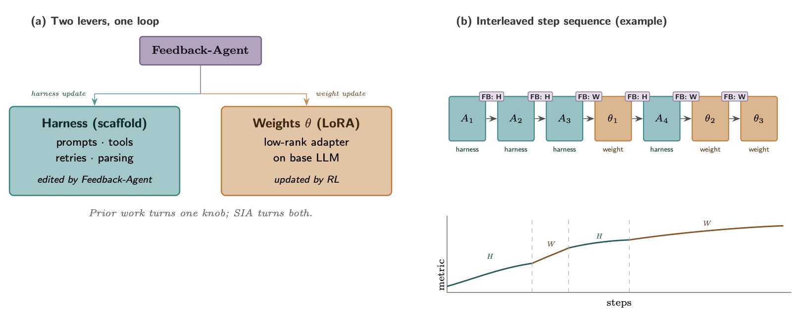

从直接改权重到优化执行系统：Harness 如何把 RSI 变成工程问题
这篇 Lilian Weng 博客的关键不在于又列了一批 agent 论文，而是把近期递归自我改进的可操作路径压到一个更清楚的对象上：模型外部的 harness、评测、记忆、权限与可搜索代码。
为什么现在值得读？因为“agent 能不能自我改进”这个问题，已经从抽象哲学变成工程系统设计：谁管理上下文，谁保留失败日志，谁决定工具调用，谁给 reward，谁有权改 harness。读完这份报告，你会把 harness 看成 模型外部可优化的认知机器，而不是 prompt 的高级别名。
Weng 的核心判断是：近期 RSI 不太可能从模型直接改写自身权重开始，更现实的路线是模型改进训练流水线和部署系统；其中 harness 是部署系统里最容易被工程化、评测和搜索的层。原文在 Harness Layer vs Core Intelligence? 明确把它称为一种 meta-methodology。
我的综合读法是：这篇博客把 agent 研究的许多分支串成一条升级链：instruction prompts → structured context → workflow → harness code → optimizer code。链条越往后，系统越像软件工程而非提示词技巧；同时，评测、权限和人类监督也越不能被放进同一个自改循环里。
Harness 不是“给模型更多工具”这么简单；它是一套运行环境，让模型能观察、行动、记忆、复盘，并接受外部评测。真正的张力在于：一旦模型能修改这套运行环境，系统就获得了更大设计空间，也打破了更重要的安全边界。本报告 thesis
Harness Engineering for Self-Improvement
先把 RSI 的问题重写成系统问题
原文开头把 RSI 放在 Good 1965 与 Yudkowsky 2008 的传统里，但马上把问题转向现代 AI：自我改进可以是模型直接改权重，也可以是模型改进训练流水线和部署系统，从而得到更强的后继系统。作者选择聚焦后者，并特别强调 deployment system。
这里的读法要小心：作者不是声称 harness 已经实现完整 RSI，而是说近期最实际的自改入口更可能在 harness。证据主要来自 coding agents、auto-research、context engineering、workflow search、program evolution 等系统；这些系统证明“外部执行系统可被优化”，还没有证明“开放式科学发现可以稳定自我加速”。
Harness 的系统边界：比 agent 框架更接近运行时
原文把早期公式“agent = LLM + memory + tools + planning + action”往软件系统方向推进：harness 还包括 workflow design、evaluation、permission controls、persistent state management。换句话说，它不是单个 prompt 模板，而是一个会保存状态、执行动作、触发测试、管理权限的运行层。

| 层 | 原文中的角色 | 为什么影响自我改进 |
|---|---|---|
| Workflow automation | plan → execute → observe/test → improve 的目标导向循环 | 让失败变成下一轮执行的输入，而不是一次性聊天记录 |
| File system memory | 把实验日志、代码 diff、论文摘要、错误轨迹放到文件里 | 长程任务的状态通常远超上下文窗口，文件让恢复和审计成为可能 |
| Sub-agent/backend jobs | 并行搜索假设、运行实验、监控后台任务 | 扩展探索宽度，但需要父 agent 管理启动、日志、取消和合并 |
| Permission/evaluation | 原文把权限控制和评测放进 harness 范畴 | 没有外部评测和权限边界，自改循环会天然滑向 reward hacking 或越权修改 |
这张表背后的模式是：harness 让 agent 不只“生成答案”，而是拥有一个可观察、可测试、可中断、可恢复的工作环境。它像操作系统的类比很有用：复杂逻辑被封装起来，接口保持简单；但一旦模型能改这个“操作系统”，安全边界就不能再假装不存在。
优化对象升级链：从 prompt 到 optimizer code
原文最重要的一句话可以压缩成一个阶梯：instruction prompts → structured context → workflow → harness code → optimizer code。它解释了为什么 prompt engineering 会变弱，但“如何指定目标、约束、上下文和评估”不会消失。
这个阶梯不是历史年表，而是抽象复杂度和风险的升级。越靠后，设计空间越大，越容易从人类工程经验中获益；同时也越依赖强评测、隔离环境、回滚机制和人类审查。
Context Engineering：记忆不是越长越好，而是要可管理
原文在 Context Engineering 中的基本判断是：把所有 tool response 和 model generation 追加进上下文，会随着任务地平线增长而失控。上下文工程的目标不是单纯塞更多 token，而是构造更结构化、更简洁、可持久化的任务状态。

| 系统 | 优化对象 | 作者读出的进展 | 仍然依赖什么 |
|---|---|---|---|
| ACE | 带 identifier/description 的 context playbook | 避免每轮重写一整坨 prompt，降低 context collapse 和 brevity bias | Generator/Reflector/Curator 的整体流程仍是人工设计 |
| MCE | skill-conditioned context function | 把“如何管理上下文”和“上下文里有什么”分离，并进行双层优化 | 需要 agentic coding env、文件化上下文和训练/验证指标 |
| Meta-Harness | 决定存储、检索、呈现信息的 harness code | 让 harness 设计成为可执行搜索空间，候选方案进入 Pareto frontier | 搜索质量取决于初始 harness、任务分布、评测和可编辑边界 |

Workflow 与 Self-Harness：把失败变成受约束的修改
在 workflow design 部分，原文先看专家手工设计的 auto-research 流水线，例如 AI Scientist 和 ScientistOne，再转向 ADAS 与 AFlow：如果 workflow 可以写成代码或图，workflow design 就可以被搜索。AFlow 以 MCTS 搜索 workflow node；ADAS 则让 meta-agent 产生新的 agentic workflow。
但 workflow 仍只是 harness 的一部分。Self-Harness 把问题推到更敏感的位置：让 LLM agents 通过 weakness mining、bounded harness proposal、proposal validation 三段式循环修改自己的 harness。原文对此给出双重态度：方向很强，但 abstraction boundary 会被打破，权限和安全层必须在循环外。

证据审计：强证据在哪里，外推会在哪里变弱
原文的证据强度并不均匀。最强的部分通常来自自动可评测任务：代码、数学、QA、GPU kernel、Kaggle-style ML engineering、benchmark reproduction。最弱也最重要的部分，是长期科学品味、真实发现价值、长期代码健康和跨团队维护成本。

| 主张 | 原文证据位置 | 证据等级 | 不能外推成什么 |
|---|---|---|---|
| Harness 可以被当作代码搜索 | Meta-Harness、Self-Harness、DGM、AlphaEvolve 讨论 | 中到强：多个系统案例支持 | 不能推出任何 harness 自改都安全或稳定 |
| DGM 发现的 agents 在 SWE-bench Verified 从 20% 到 50%，Polyglot 从 14.2% 到 30.7% | Evolutionary Search 段落 | 强：原文给出具体设置下数字 | 不能推出所有软件工程任务都能类似提升 |
| PaperBench 有 8,316 rubrics，Claude 3.5 Sonnet 约 21% 且未超过 ML PhDs | Appendix: Some useful benchmarks | 强：基准描述和数字明确 | 不能推出所有模型或后续 scaffold 都停在该水平 |
| RE-Bench 中 human experts 8 小时非零分 82%，24% 达到或超过强 reference；AI 2 小时预算高 4×，但人类在更长预算回报更好 | Appendix: Some useful benchmarks | 强：基准摘要数字明确 | 不能把短预算 agent 优势外推到长程科研管理 |
| SIA 的 joint harness/weight update 方向有趣但证据 provisional | Joint Optimization with Model Weights | 弱到中：作者指出实验混杂因素 | 不能当作 joint update 已经被清晰验证 |

开放问题：自改系统最怕优化错信号
Future Challenges 是全文的安全阀。作者没有把 auto-research 的论文生成等同于科学发现：系统可以写出看似合理的 manuscript，却仍然有伪造引用、实现漂移、实验结果弱等问题。Trehan & Chopra 2026 的四次完整尝试中，作者转述了六类失败：训练数据默认、执行压力下实现漂移、记忆退化、过度乐观、领域智能不足、科学品味弱。
| 瓶颈 | 为什么是 harness 问题 | 可能的工程约束 |
|---|---|---|
| 弱而模糊的 evaluator | 优化循环只能优化它能测到的东西 | held-out tests、trace audit、人工审查关键决策 |
| Context/memory lifecycle | 长程自主性会让记忆不断增长并退化 | 文件化状态、摘要生命周期、失败日志保留 |
| Negative results | 训练数据和发表激励偏向成功故事 | 让失败尝试成为可检索资产，而不是被覆盖 |
| Diversity collapse | 进化/RL 循环会利用已知高分模式 | novelty sampling、种群多样性约束、审计重复模式 |
| Reward hacking | 自改 loop 会最大化给定信号 | 评测器和权限层放在 harness evolution 之外 |
| Long-term success | 短期 sandbox 奖励看不到维护成本 | 把兼容性、所有权边界、迁移成本纳入评测 |
| Human role | 人不能被简单移出 loop | 让人类在正确抽象层和正确时机介入 |
更大的图景：未来的 agent 能力不只来自更强 base model，也来自更成熟的外部认知基础设施。真正困难的是，让这套基础设施能学习，同时不把评测器、权限和人类判断一起卷进被优化对象里。本报告结论